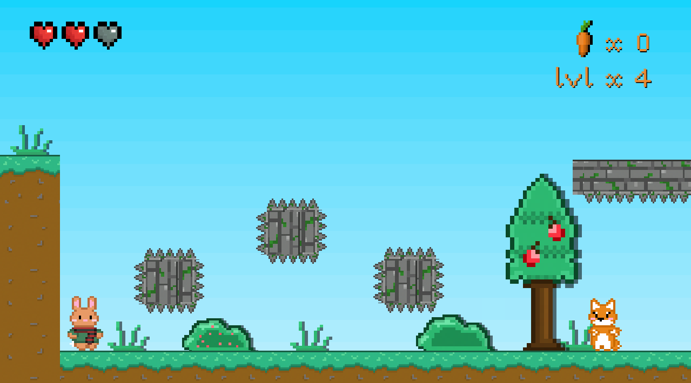
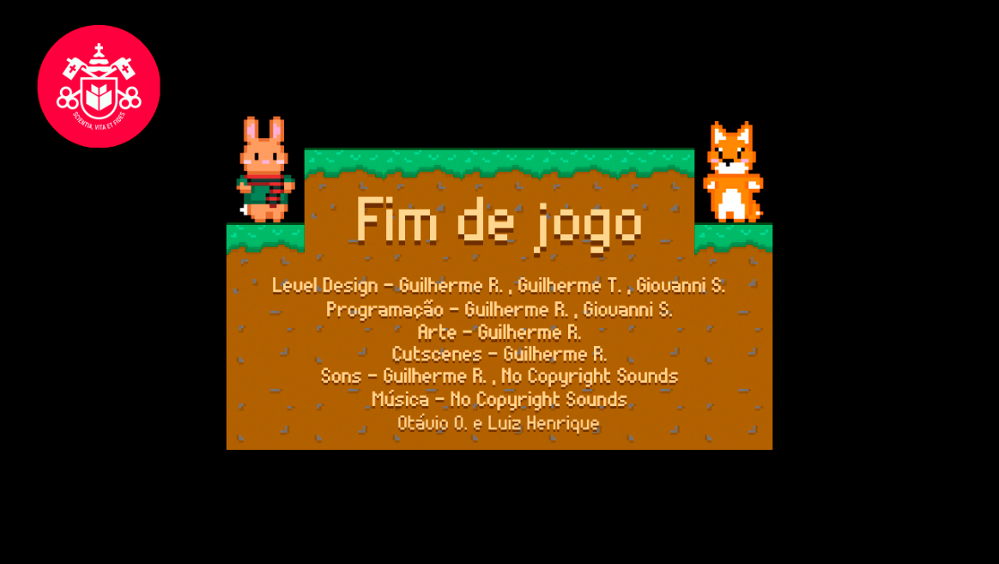

Bill the Bunny
Experiência Criativa
Jogar Bill the Bunny
Oque é o Bill the Bunny?
Foi um jogo de plataforma desenvolvido como o meu primeiro RA da PUC, como entrei um pouco atrasada o projeto já estava em desenvolvimento pelo o meu grupo, possue quatro fazes e um boss final, eu pessoalmente considero o jogo mais "completo" de todos os grupos.

Minha Contribuição
Entrando uma semana após o ínicio das aulas, quando peguei o projeto, uma grande parte já havia sido feita pelo grupo, por isso me propus a fazer a fase do boss final, e essa junto com algumas bug fixes e polimento geral foi a minha maior contribuição.
Oque Aprendi
Como a maioria dos projetos nesse primeiro semestre, o meu maior ganho foi em aprender a como trabalhar em equipe, embora neste projeto tenha sido um pouco diferente, pois a minha parte do boss era bem separada do resto do jogo, ainda sim vi os horrores se trabalhar em git.
